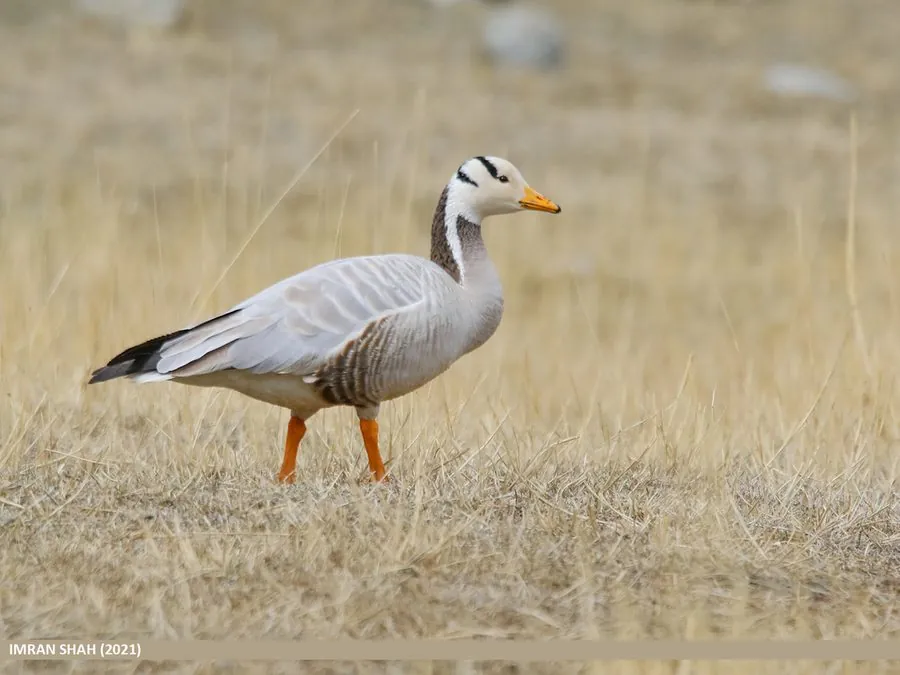

鸟类 · 动物界
斑头雁 Anser indicus

世界飞得最高的鸟类之一，头部有两条黑色横斑，迁徙时能飞越喜马拉雅山脉，在青藏高原繁殖、印度越冬。
- 分类
- 门脊索动物门纲鸟纲目雁形目科鸭科属雁属
- 栖息环境
- 青藏高原、新疆和中亚的高原湖泊、沼泽和河流，冬季南迁到低海拔湿地
- 地理分布
- 繁殖于中亚、蒙古、中国青藏高原和新疆，越冬于印度、缅甸和中国西南
- 保护级别
- IUCN 无危（LC）；中国国家二级保护动物
物种志
斑头雁体长 71–76 cm，体重约 1.9–3.2 kg，翼展 140–160 cm。它的体羽呈灰白色，后颈深褐色，头部白色，头顶有两条黑色横斑，因此得名；喙和腿橙黄色，翅膀上有黑色飞羽，尾羽白色。雌雄羽色相似。
斑头雁繁殖于中亚、蒙古、中国青藏高原和新疆的高原湖泊，冬季南迁到印度、缅甸和中国西南地区。它们是世界上飞得最高的鸟类之一，迁徙时能飞越海拔 7000 米以上的喜马拉雅山脉，靠特殊的血红蛋白和肺结构适应高空缺氧。斑头雁以水生植物、青稞和草类为食，繁殖期在湖边地面或悬崖上营巢，每窝产卵 3–8 枚，孵化约 27–30 天。由于高原湿地变化和狩猎压力，部分地区种群下降，目前被列为无危物种，中国将其列为国家二级保护动物。
形态与习性
- 食性水生植物、青稞和草类
- 体长71–76 cm
- 体重约 1.9–3.2 kg
- 翼展140–160 cm
- 繁殖每窝 3–8 枚卵，孵化约 27–30 天
- 寿命野外约 10–15 年
- 飞行高度迁徙时可飞越海拔 7000 米以上的山口
趣味知识
- 斑头雁能飞越 7000 米以上的喜马拉雅山脉，是世界飞得最高的鸟类之一。
- 它头部有两条黑色横斑，因此得名“斑头雁”。
- 斑头雁的血液能高效携带氧气，适应高空缺氧环境。
- 它们常在青藏高原的湖泊边成群繁殖。